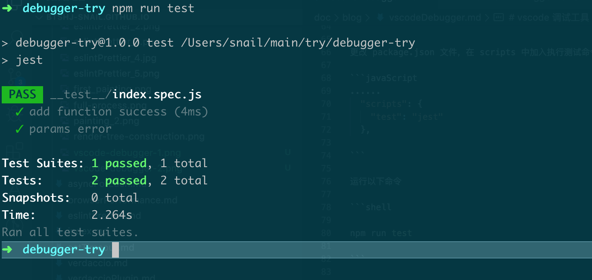
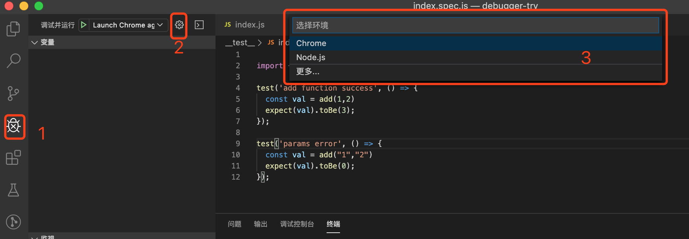
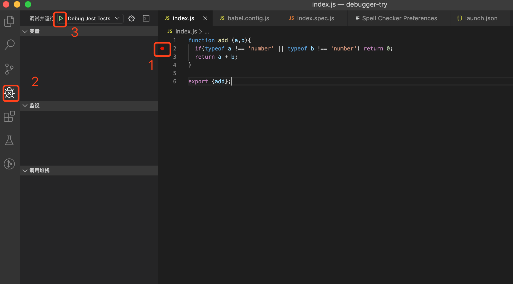
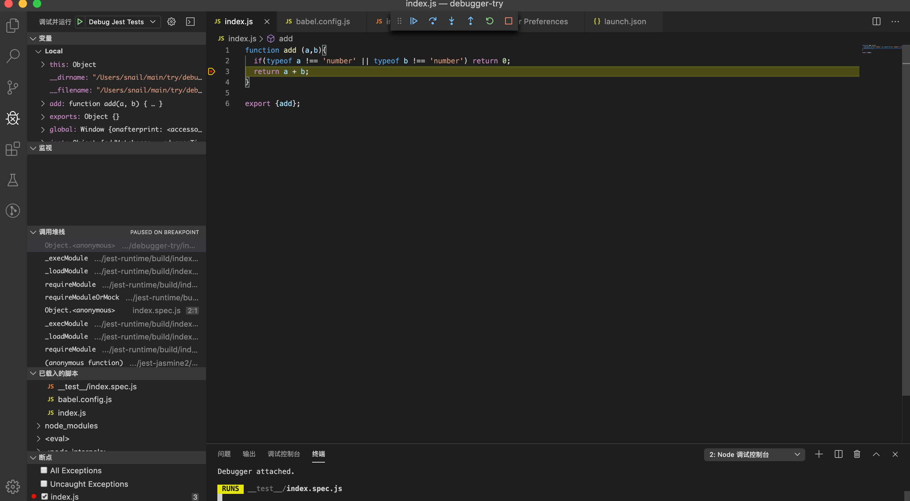

原来只是知晓 vscode 有调试工具，但是总觉的有浏览器的开发者工具已经完全够用了。但是最近在写 sdk 和其他公共工具类，使用 jest 的时候才发现， vscode 调试工具大有用处。可以方便断点、步进跟踪调试代码。
我们新创建一个名字叫 debugger-try 的工程，用以实践 vscode 的 debugger 功能。同时创建 index.js 文件，书写一个简单的 add 方法，用以测试。
function add (a,b){
if(typeof a !== 'number' || typeof b !== 'number') return 0;
return a + b;
}
export {add};同时为了顺便将 jest 与 vscode 的 debugger 功能结合起来，我们在这个工程中引入 jest 。
npm install jest babel-jest @babel/core @babel/preset-env --saev-dev
在工程的 __test__文件夹中建立一个测试文件，index.spec.js.
// index.spec.js
import {add} from '../index'
import {add} from '../index'
test('add function success', () => {
const val = add(1,2)
expect(val).toBe(3);
});
test('params error', () => {
const val = add("1","2")
expect(val).toBe(0);
});
更改 package.json 文件，在 scripts 中加入执行测试命令动作
......
"scripts": {
"test": "jest"
},
运行以下命令
npm run test

vscode 调试配置文件
按照上图，依次点击 1 ，2 ，3 步骤。
此时会在工程根目录创建 .vscode 文件夹，在该文件夹下生成一个 launch.json 文件。
该文件则是 debugger 的核心文件，它将会指导 vscode 的 debugger 模块如何运行。
{
// 使用 IntelliSense 了解相关属性。
// 悬停以查看现有属性的描述。
// 欲了解更多信息，请访问: https://go.microsoft.com/fwlink/?linkid=830387
"version": "0.2.0",
"configurations": [
{
"type": "node",
"request": "launch",
"name": "Debug Jest Tests",
"url": "http://localhost:8080",
"webRoot": "${workspaceFolder}"
}
]
}
在 vscode 中，有两种模式调试模式， Launch 和 Attach 。对于这两种模式的区别，可以按以下的描述进行理解。
launch : 启动。在 vscode 启动应用程序attach : 附加。 在启动应用程序时，附加启动的应用。
{
"version": "0.2.0",
"configurations": [
{
"version": "0.2.0",
"configurations": [],
"compounds": []
},
{
// 配置名称，将会在启动配置的下拉菜单中显示
"name": "Launch Chrome against localhost",
// 配置类型.chrome/node 等
"type": "chrome",
// 请求配置类型，可以为launch（启动）或attach（附加）
"request": "launch",
// 将要进行调试的程序的路径
"program": "${workspaceRoot}",
// 传递给运行时可执行文件的可选参数。
"runtimeArgs":[],
// 程序调试时传递给程序的命令行参数。
"args": [],
// 环境变量
"env":"",
// 调试程序时的工作目录，一般为${workspaceRoot}即代码所在目录
"cwd": "${workspaceRoot}",
// 端口号
"port":9527,
// 使用哪种打印日志 internalConsole integratedTerminal externalTerminal
"console":"internalConsole",
// 调试时是否显示控制台窗口，一般设置为true显示控制台
"externalConsole": true,
// 在执行一个任务前开启一个debug session，该值是.vscode文件夹下tasks.json文件中task的name。或者设置${defaultBuildTask}，以使用默认的任务
"preLaunchTask": "",
// 在debug session结束后，执行的任务。该值是.vscode文件夹下tasks.json文件中task的name。
"postDebugTask":"",
//控制何时打开内部调试控制台。neverOpen 从不打开 ；openOnFirstSessionStart 在第一次时打开 ； openOnSessionStart 在打开时
"internalConsoleOptions":"neverOpen",
// 仅用于debug插件开发者
"debugServer":""
}
]
}
jest
{
"version": "0.2.0",
"configurations": [
{
"name": "Debug Jest Tests",
"timeout": 600000,
"type": "node",
"request": "launch",
"runtimeArgs": ["--inspect-brk", "${workspaceRoot}/node_modules/.bin/jest"],
"cwd": "${workspaceFolder}",
"args": ["--runInBand", "--no-watch"],
"console": "integratedTerminal",
"internalConsoleOptions": "openOnFirstSessionStart",
"port": 9229
}
]
}
debug随后和其他IDE工具一样，在想要断点的代码处打上断点。

注意，一定要先打断点，再启动调试。否则打的断点不生效
进入断点后的效果
